| Cumulative threshold | Cloglog threshold | Description | Fractional predicted area | Training omission rate |
|---|---|---|---|---|
| 1.000 | 0.054 | Fixed cumulative value 1 | 0.673 | 0.004 |
| 5.000 | 0.213 | Fixed cumulative value 5 | 0.514 | 0.032 |
| 10.000 | 0.325 | Fixed cumulative value 10 | 0.430 | 0.078 |
| 0.008 | 0.003 | Minimum training presence | 0.980 | 0.000 |
| 12.396 | 0.370 | 10 percentile training presence | 0.401 | 0.100 |
| 28.561 | 0.575 | Equal training sensitivity and specificity | 0.267 | 0.267 |
| 13.458 | 0.386 | Maximum training sensitivity plus specificity | 0.389 | 0.111 |
| 2.015 | 0.101 | Balance training omission, predicted area and threshold value | 0.606 | 0.011 |
| 4.501 | 0.199 | Equate entropy of thresholded and original distributions | 0.525 | 0.028 |
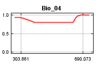
 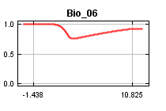
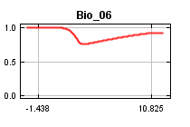

 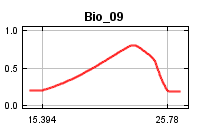
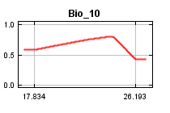
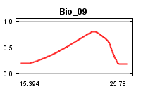
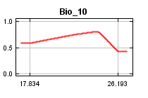

 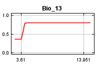
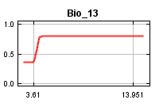
 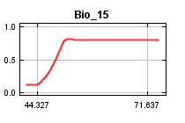
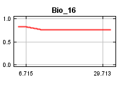
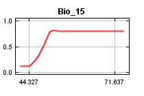
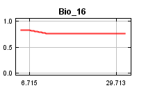
 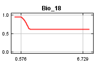
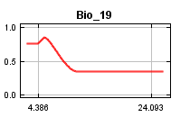
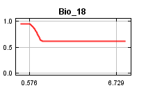
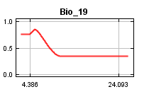
 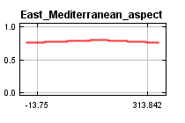
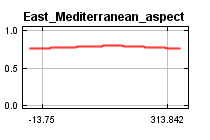
 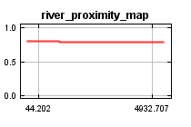
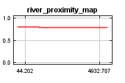
 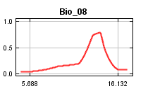
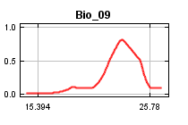
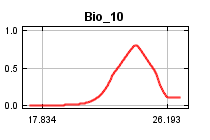
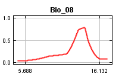
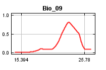
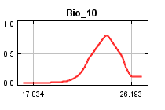


 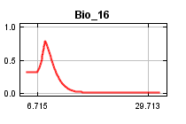
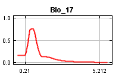
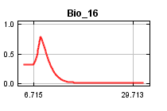
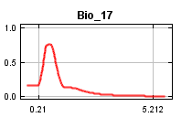
 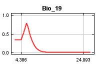
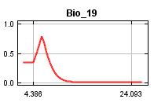
 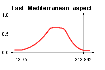
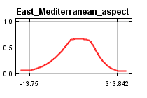
 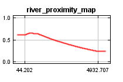
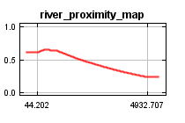
| Variable | Percent contribution | Permutation importance |
|---|---|---|
| Bio_09 | 48.5 | 13.2 |
| Bio_19 | 8.4 | 12.9 |
| Bio_14 | 6.3 | 5.8 |
| Bio_18 | 5.4 | 6.6 |
| Bio_03 | 5.1 | 2.4 |
| Bio_10 | 4.9 | 3.1 |
| Bio_12 | 3.6 | 0.8 |
| Bio_06 | 3.1 | 12.3 |
| Bio_05 | 3 | 6.2 |
| Bio_13 | 2.4 | 2.7 |
| Bio_16 | 1.9 | 0.1 |
| East_Mediterranean_DEM | 1.3 | 2.6 |
| Bio_17 | 1 | 7.1 |
| East_Mediterranean_slope | 1 | 1.6 |
| Bio_15 | 0.9 | 2.3 |
| Bio_02 | 0.9 | 1.9 |
| Bio_04 | 0.8 | 3 |
| Bio_07 | 0.7 | 4 |
| Bio_08 | 0.4 | 0.2 |
| Bio_01 | 0.3 | 11.2 |
| East_Mediterranean_aspect | 0 | 0 |
| river_proximity_map | 0 | 0 |
| Bio_11 | 0 | 0 |